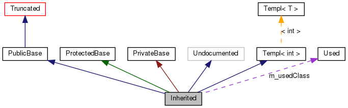

本頁解釋如何解譯這些由doxygen所產生的圖示 .
請看下面範例:
5 class Truncated : public Invisible { };
7 /* 未經過doxygen註解處理過的類別 */
8 class Undocumented { };
10 /*! 經過公開(Public)繼承的類別 */
11 class PublicBase : public Truncated { };
14 template<class T> class Templ { };
16 /*! 使用保護(Protected)繼承的類別 */
17 class ProtectedBase { };
19 /*! 使用私有(Private)繼承的類別 */
20 class PrivateBase { };
25 /*! 由數個其他類別所繼承來的超類別(Super Class) */
26 class Inherited : public PublicBase,
27 protected ProtectedBase,
若在組態檔中的 MAX_DOT_GRAPH_HEIGHT tag 設為 240，將會產生下列的圖示:

上圖中的各區塊意義如下:
-
A 填滿黑色的區塊代表產生這個圖示的類別或結構 .
-
A 黑邊的區塊代表文件化過的結構或類別.
-
A 灰邊的區塊代表未經文件化的結構或是類別.
-
A 紅邊的區塊代表文件化的結構或是類別，這些結構或類別的繼承或包含關係不會全部顯示. A 圖示 若無法塞入指定的邊界中將會被截斷.
箭頭具有下面的意義:
-
A 深藍色箭頭用來代表兩個類別間的公開繼承 關係.
-
A 深綠色箭頭代表保護繼承.
-
A 深紅色箭頭代表私有繼承.
-
A 紫色箭頭用來表示類別被另一個包含或是使用.箭頭上標示著可存取該類別或是結構的對應變數.
-
A 黃色箭頭代表樣版實體與樣版類別之間的關係。箭頭上標記著樣版實體上的參數.
 1.8.9.1
1.8.9.1